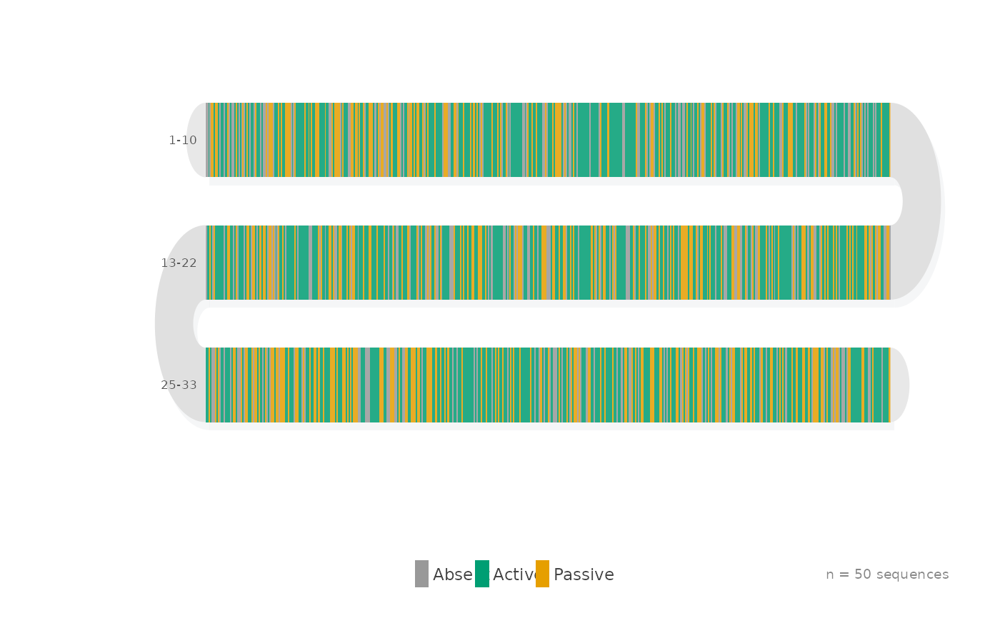
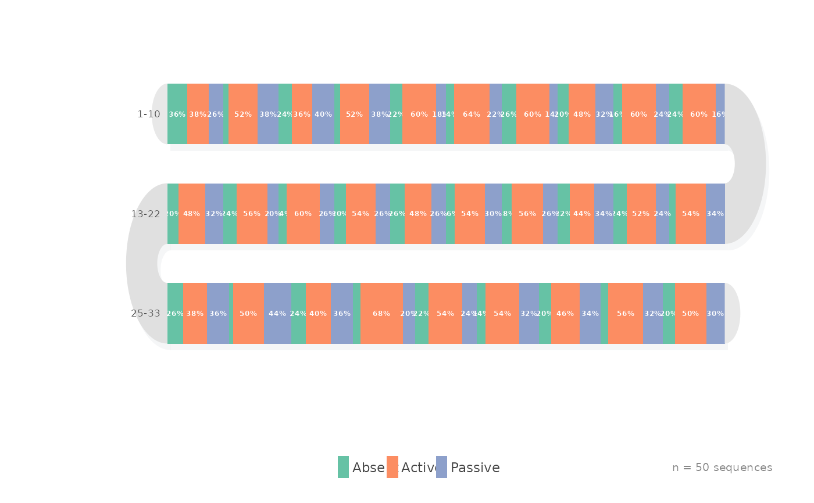

Plot many state sequences as a serpentine index or distribution plot
Source:R/multi_snake.R
multi_snake.RdA multi-sequence snake displays a set of categorical sequences, such as the weekly activity states of a class of students, with their common time axis folded into bands joined by U-turns. Each time point is a block along the serpentine path, so long sequences fit in one panel while the order of time points is kept.
Two displays are available. With type = "index" each block holds one
thin tick per sequence, colored by that sequence's state at the time
point, as in a sequence index plot; every sequence keeps the same position
in all blocks, and sequences can be ordered with sort_by. With
type = "distribution" each block is a stacked bar of the share of
sequences in each state at that time point, as in a state distribution
plot (Gabadinho et al., 2011). The U-turns are neutral connectors: time
points that fall on a U-turn are not drawn, and the label of each band
gives the range of time points it shows.
For a single long sequence use sequence_snake(); for phases with start
and end dates use timeline_snake(). Distributions of ordinal survey
responses are shown by survey_sequence().
Usage
multi_snake(
sequences,
type = c("index", "distribution"),
states = NULL,
colors = NULL,
sort_by = c("none", "first", "last", "freq", "entropy"),
rows = NULL,
band_height = 28,
band_gap = 18,
plot_width = 500,
margin = c(top = 30, right = 10, bottom = 50, left = 80),
flow = c("snake", "natural"),
show_labels = TRUE,
show_legend = TRUE,
show_percent = TRUE,
border_color = NA,
title = NULL,
background = "white",
shadow = TRUE,
legend_text_size = 0.8,
tick_opacity = 0.85
)Arguments
- sequences
A matrix or data frame with one row per sequence and one column per time point; cells hold state labels. Column names, if any, label the time points.
- type
"index"(default) or"distribution".- states
State labels in the order used for the legend and for sorting.
NULL(default) takes them in order of first appearance.- colors
State colors: a vector named by state, or an unnamed vector recycled over
states. States missing from a named vector are drawn in grey.NULL(default) uses a built-in qualitative palette.- sort_by
Order of the sequences in the index display:
"none"(default, input order),"first"or"last"(by the state at the first or last time point),"freq"(by each sequence's most frequent state) or"entropy"(by increasing Shannon entropy of its states). Ignored fortype = "distribution".- rows
Number of bands.
NULL(default) uses one band per 11 time points, rounded up.- band_height, band_gap
Height of each band and gap between bands, in plot units (defaults 28 and 18).
- plot_width
Length of each band in plot units (default 500).
- margin
Named numeric vector of
top,right,bottomandleftmargins in plot units (defaultc(top = 30, right = 10, bottom = 50, left = 80)).- flow
"snake"(default): bands alternate direction."natural": every band reads in the same direction.- show_labels
Label each band with the range of time points it shows (default
TRUE).- show_legend
Draw the state legend and the number of sequences (default
TRUE).- show_percent
Print percentages inside distribution segments wide enough to hold them (default
TRUE).- border_color
Color of block outlines, or
NA(default) for none.- title
Plot title, or
NULL(default) for none.- background
Background color (default
"white").- shadow
Draw drop shadows (default
TRUE).- legend_text_size
Size of the legend text (default 0.8).
- tick_opacity
Opacity of the ticks in the index display, between 0 and 1 (default 0.85).
References
Gabadinho, A., Ritschard, G., Müller, N. S., & Studer, M. (2011). Analyzing and visualizing state sequences in R with TraMineR. Journal of Statistical Software, 40(4), 1-37. doi:10.18637/jss.v040.i04
See also
sequence_snake() for one sequence; timeline_snake() for dated
phases; survey_sequence() for ordinal survey responses.
Examples
# 50 students observed over 33 weeks
set.seed(42)
weeks <- matrix(
sample(c("Active", "Passive", "Absent"), 50 * 33, replace = TRUE,
prob = c(0.5, 0.3, 0.2)),
nrow = 50
)
multi_snake(weeks, sort_by = "freq",
colors = c(Active = "#009E73", Passive = "#E69F00",
Absent = "#999999"))

multi_snake(weeks, type = "distribution")
